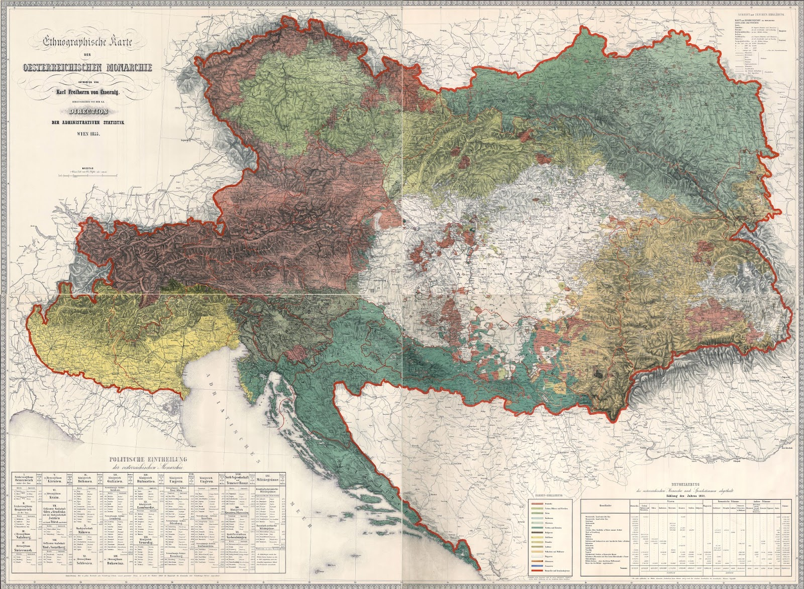
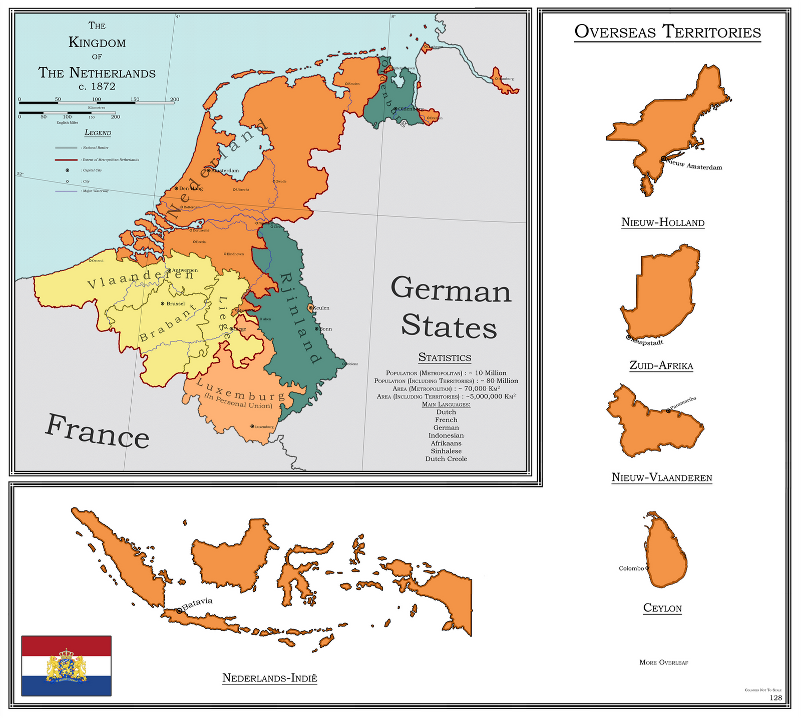
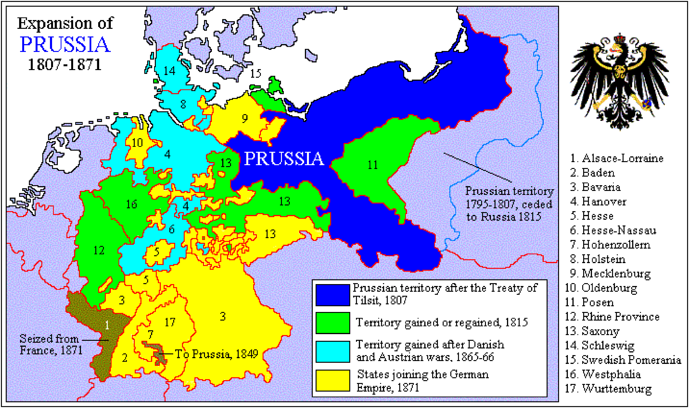
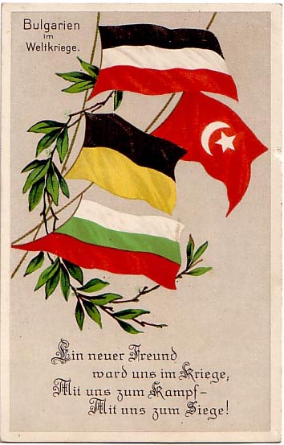

MY TOP 3 FAV HISTORICAL COUNTRIES
#1 AUSTRIAN EMPIRE / AUSTRIA-HUNGARY

The Austrian Empire, officially known as the Empire of Austria, was a multinational European great power from 1804 to 1867, created by proclamation out of the realms of the Habsburgs. During its existence, it was the third most populous nation in Europe after the Russian Empire and the United Kingdom, while geographically, it was the third-largest empire in Europe after the Russian Empire and the First French Empire. The empire was proclaimed by Francis II in 1804 in response to Napoleon's declaration of the First French Empire, unifying all Habsburg possessions under one central governmen
#2 DUTCH CLONIAL EMPIRE

The Austrian Empire, officially known as the Empire of Austria, was a multinational European great power from 1804 to 1867, created by proclamation out of the realms of the Habsburgs. During its existence, it was the third most populous nation in Europe after the Russian Empire and the United Kingdom, while geographically, it was the third-largest empire in Europe after the Russian Empire and the First French Empire. The empire was proclaimed by Francis II in 1804 in response to Napoleon's declaration of the First French Empire, unifying all Habsburg possessions under one central governmen
#3 KINGDOM OF PRUSSIA

The Austrian Empire, officially known as the Empire of Austria, was a multinational European great power from 1804 to 1867, created by proclamation out of the realms of the Habsburgs. During its existence, it was the third most populous nation in Europe after the Russian Empire and the United Kingdom, while geographically, it was the third-largest empire in Europe after the Russian Empire and the First French Empire. The empire was proclaimed by Francis II in 1804 in response to Napoleon's declaration of the First French Empire, unifying all Habsburg possessions under one central governmen
MY FAV WARS
#1 SEVEN YEARS WAR
The Austrian Empire, officially known as the Empire of Austria, was a multinational European great power from 1804 to 1867, created by proclamation out of the realms of the Habsburgs. During its existence, it was the third most populous nation in Europe after the Russian Empire and the United Kingdom, while geographically, it was the third-largest empire in Europe after the Russian Empire and the First French Empire. The empire was proclaimed by Francis II in 1804 in response to Napoleon's declaration of the First French Empire, unifying all Habsburg possessions under one central governmen

#2 WORLD WAR 1
The Austrian Empire, officially known as the Empire of Austria, was a multinational European great power from 1804 to 1867, created by proclamation out of the realms of the Habsburgs. During its existence, it was the third most populous nation in Europe after the Russian Empire and the United Kingdom, while geographically, it was the third-largest empire in Europe after the Russian Empire and the First French Empire. The empire was proclaimed by Francis II in 1804 in response to Napoleon's declaration of the First French Empire, unifying all Habsburg possessions under one central governmen
